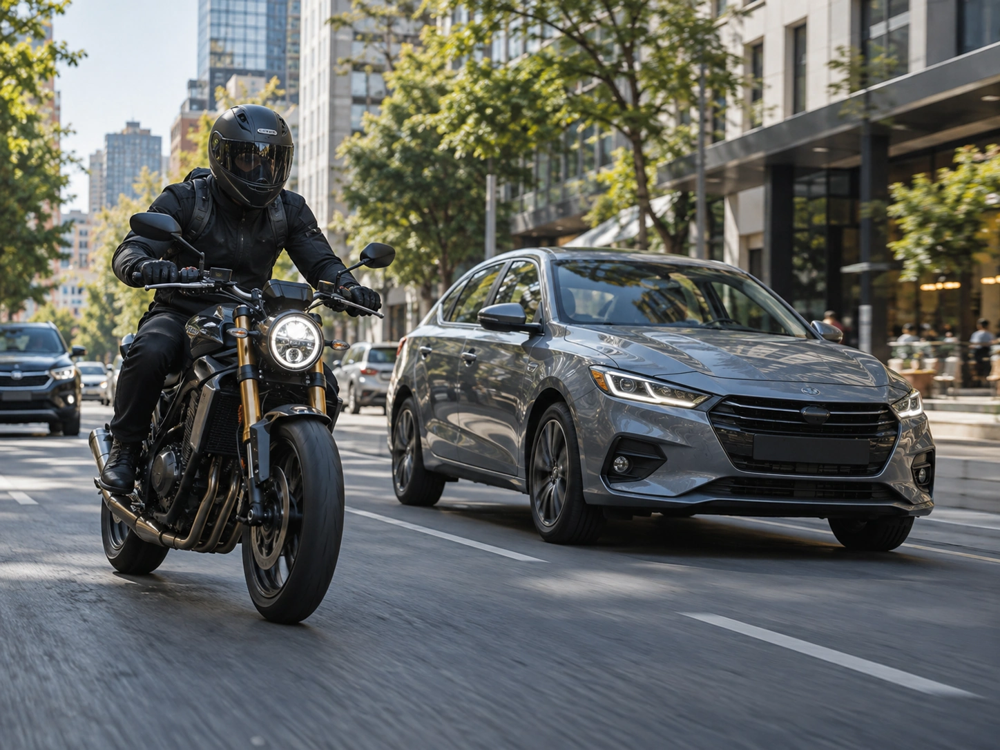
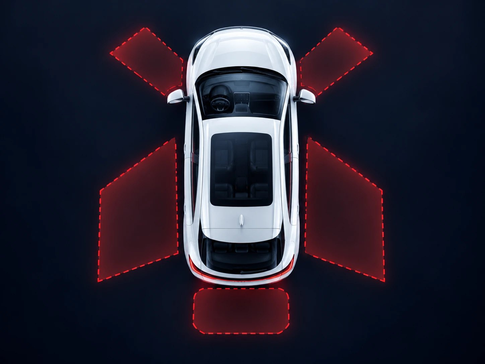

Seguridad vial
Entender los riesgos y conocer las decisiones que ayudan a movernos de manera más segura.
ACA MOV | AUTOMÓVIL CLUB ARGENTINO
Un espacio para descubrir, aprender y repensar la movilidad. Información, conocimiento e ideas para construir una forma de movernos más segura, accesible y sostenible.


Información que ayuda a tomar mejores decisiones.
Nuevas tecnologías, nuevas posibilidades y nuevos desafíos.
Una movilidad más segura se construye entre todos.
UN ESPACIO PARA MOVERNOS MEJOR
Nuevas tecnologías, desafíos de seguridad y otras maneras de trasladarnos están transformando nuestra vida cotidiana. En ACA MOV acercamos información y conocimiento para entender esos cambios y tomar mejores decisiones.
Entender los riesgos y conocer las decisiones que ayudan a movernos de manera más segura.

Descubrir cómo la tecnología está transformando los vehículos, las ciudades y nuestros recorridos.

Conocer alternativas y soluciones para avanzar hacia una movilidad más eficiente y sostenible.
También encontrás: educación, investigación, nuevas formas de movilidad, y proyectos y alianzas.

Hay decisiones que hacen la diferencia.
Todos los días tomamos decisiones mientras nos movemos. Ponernos el casco, usar el cinturón o dejar el celular de lado pueden parecer gestos simples, pero hacen una gran diferencia.
Descubrí cómoEL DESAFÍO
Los siniestros viales tienen consecuencias que van mucho más allá de quienes están involucrados. Entender los riesgos es el primer paso para prevenirlos.
de las víctimas fatales de
2025 iba en moto.
4.060 víctimas fatales en 3.255 siniestros durante 2025. Fuente: Informe Preliminar de Siniestralidad Vial Fatal 2025, ANSV.
vidas perdidas en siniestros viales en Argentina durante 2025.
Luchemos por la Vidade las víctimas fatales con tipo de usuario identificado viajaban en moto.
de las víctimas fatales con edad registrada tenían entre 15 y 34 años.
ANSVFuente: Estudio Observacional 2025 sobre el comportamiento vial de motociclistas en la Ciudad de Buenos Aires, FIA Región IV y ACA.
RIESGOS EN MOTO
La visibilidad, el estado del camino y las maniobras de otros vehículos pueden cambiar las condiciones de circulación en segundos. Conocer los riesgos ayuda a prevenirlos.
Un auto puede cruzarse en tu trayectoria al doblar.
Tener prioridad no garantiza que otros vehículos se detengan.
Los vehículos estacionados pueden impedir que veas o te vean a tiempo.
SEGURIDAD EN MOTO
Usarlo correctamente es una de las decisiones más importantes al subirte a una moto. Conocé cómo ayuda a protegerte y qué tener en cuenta para elegirlo y utilizarlo.

Estudio de 598 cascos involucrados en siniestros viales. Otte, D. (1991). SAE Technical Paper 912915. La ubicación de cada zona es esquemática.
Hasta un 74% menos de riesgo de sufrir lesiones cerebrales con un casco seguro y de calidad.
Más de 6 veces menor riesgo de morir en un siniestro vial al usar correctamente un casco seguro y de calidad.
Tiene que ajustarse bien a tu cabeza, sin quedar flojo ni generar puntos de presión excesiva.
Asegurá correctamente la correa de sujeción, incluso en recorridos cortos.
Elegí un casco que cumpla con las normas de seguridad exigidas por la legislación vigente.
Un golpe importante puede comprometer su capacidad de protección, aunque no presente daños visibles.

RESPONSABILIDAD COMPARTIDA
En la calle convivimos peatones, ciclistas, motociclistas y conductores. Nuestras decisiones también influyen en la seguridad de quienes nos rodean.
Respetar las prioridades de paso, mantener distancias seguras y prestar atención al entorno ayuda a construir una movilidad más segura para todos.
AL VOLANTE
Los puntos ciegos son zonas alrededor del vehículo que no podés ver directamente ni a través de los espejos en determinadas condiciones. Conocé dónde están y qué precauciones tomar antes de realizar una maniobra.

PUNTO 1 DE 5
Una moto o un auto que circula por el carril izquierdo puede quedar fuera de tu campo de visión.Queda fuera del espejo y de tu visión periférica. Una moto que te pasa por la izquierda puede estar justo ahí.
Motociclistas, ciclistas y otros vehículos que circulan a tu izquierda.Una moto que te pasa por la izquierda.
Antes de cambiar de carril, revisá los espejos, señalizá y comprobá el punto ciego girando brevemente la cabeza.Antes de cambiar de carril: espejo, señal y giro de cabeza hacia el hombro.
Todos los ocupantes deben usarlo correctamente, incluso en asientos traseros.
Evitá las distracciones. Si necesitás usarlo, detenete en un lugar seguro y permitido.
Respetá los límites y adaptá la conducción a las condiciones del camino.
Utilizá el sistema de retención infantil adecuado y correctamente instalado.
SEGURIDAD EN MOVIMIENTO
Las normas de tránsito no son simples obligaciones. Son acuerdos que nos ayudan a compartir las calles de manera más segura.
La velocidad influye en tu capacidad de reacción y en la gravedad de un impacto.
El alcohol afecta la atención, los reflejos y la capacidad de tomar decisiones.
Una distracción de segundos puede hacer que no veas lo que pasa adelante.
Casco en moto y cinturón en auto, incluso en los trayectos más cortos.
Anticipá tus maniobras y respetá los espacios de quienes comparten la vía.
Una movilidad más segura empieza con las decisiones que tomamos todos los días.